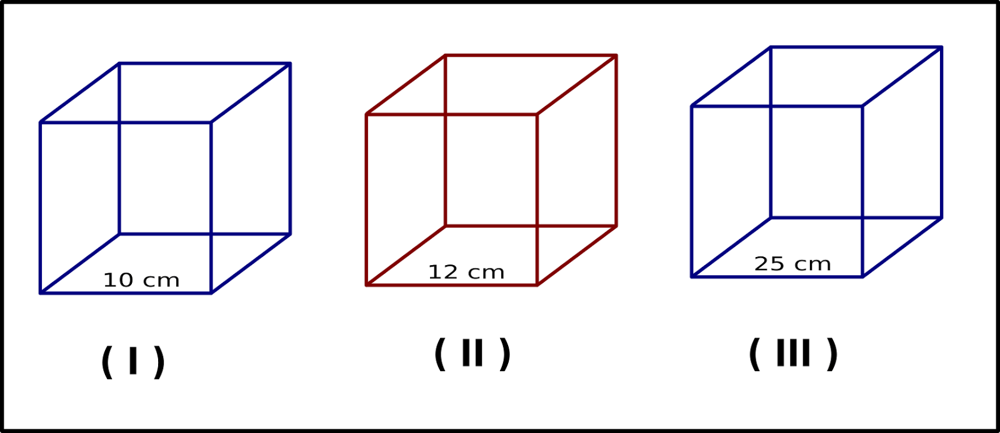
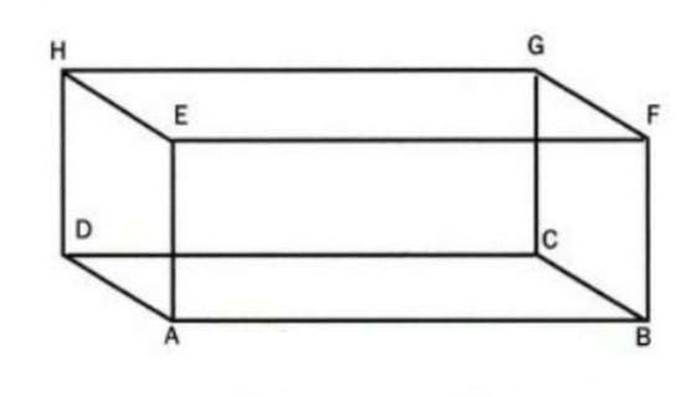

Kubus
Kubus adalah bangun ruang yang dibatasi oleh enam sisi berbentuk persegi yang identik. Kubus memiliki 12 rusuk yang sama panjang dan 8 titik sudut. Contoh benda berbentuk kubus dalam kehidupan sehari-hari adalah dadu atau kotak rubik.
Coba:

Balok
Balok adalah bangun ruang tiga dimensi yang mirip dengan kubus, namun sisi-sisinya berbentuk persegi panjang. Balok memiliki tiga pasang sisi berhadapan yang sejajar dan sama besar. Contoh benda berbentuk balok adalah kotak sepatu, lemari, atau akuarium.
Coba:

Tabung
Tabung adalah bangun ruang yang dibentuk oleh dua lingkaran sejajar (sebagai alas dan tutup) dan sebuah sisi lengkung yang disebut selimut tabung. Contoh benda yang berbentuk tabung adalah kaleng minuman, gelas, atau pipa air.